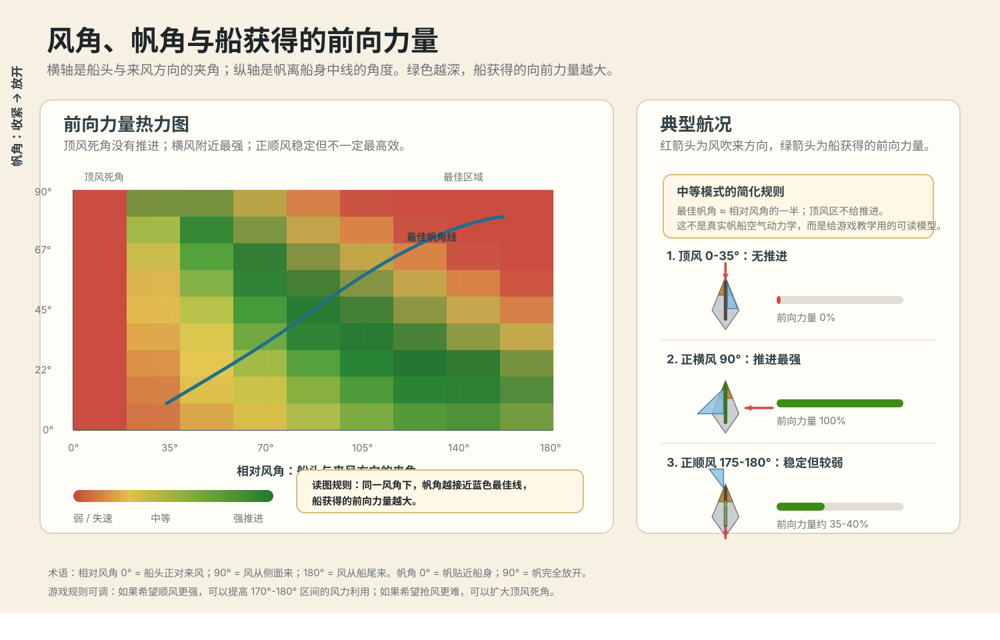
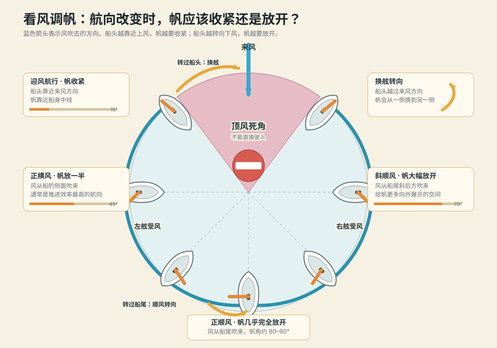

风向判断
玩家需要理解船头与来风夹角。顶风会失速，横风效率最高，顺风稳定但未必最快。
原型玩法 · 风帆驾驶
游戏玩法设计
当前原型采用中等模式：玩家控制船舵和帆角，帆面积暂时固定。第一批任务不急着加入贸易、战斗和复杂船队，而是先验证玩家是否能读懂风向、选择航线、提前减速，并在空间压力下完成航行目标。
中等模式基础
玩家需要理解船头与来风夹角。顶风会失速，横风效率最高，顺风稳定但未必最快。
收帆是把帆拉近船身，放帆是让帆向外打开。帆角错误会让帆抖动、航速下降。
目标在上风时不能直线冲过去，玩家要通过之字形抢风航行接近目标。
船不是即时停下的载具。入港、绕标和窄水道任务都要考验提前转向和减速。


第一批挑战
玩家从静止状态出发，目标在顺风方向。第一关只要求看懂风线，放开帆，让船稳定驶向红旗。
玩家顺风靠近港口。顺风容易加速，但入港必须提前减速，否则高速进入停泊圈会失败。
目标仍在屏幕上方，但风从侧面吹来。玩家要理解横风效率高，同时保持船头不被转向操作带偏。
路线由多个左右交错的检查点组成。玩家每次改变航向后，都要重新判断风在船的哪一侧。
海面上放置一组浮标，玩家按顺序绕行。每次转向后，最佳帆角都会变化。
目标点在来风方向。玩家不能直线顶风过去，必须左右换舷，用之字形航线逐渐接近目标。
航线两侧布置浅滩、礁石或港口木桩。玩家要在有限空间里控制速度、转向和帆角，是前面能力的组合考核。
推荐推进顺序
| 阶段 | 挑战 | 玩家应学会的能力 | 后续可扩展机制 |
|---|---|---|---|
| 1 | 顺风起航 | 理解风线方向、放帆和基础推进。 | 新手教学、基础航速评分。 |
| 2 | 顺风入港 | 提前减速，处理惯性和停靠精度。 | 码头停靠、装卸、港口罚款。 |
| 3 | 侧风直航 | 利用横风效率，保持稳定航向。 | 长距离航线、侧风速度奖励。 |
| 4 | 换舷转向 | 转向后重新判断来风侧，并快速恢复速度。 | 抢风航行、路线考试。 |
| 5 | 横风绕标 | 在连续转向中保持帆角和速度。 | 竞速、训练场、港口考试。 |
| 6 | 逆风抵达 | 理解禁航区、抢风航行和之字形路线。 | 不同船型的逆风能力。 |
| 7 | 窄水道穿越 | 在空间压力下组合转向、减速和调帆。 | 礁石、浅滩、航道封锁。 |